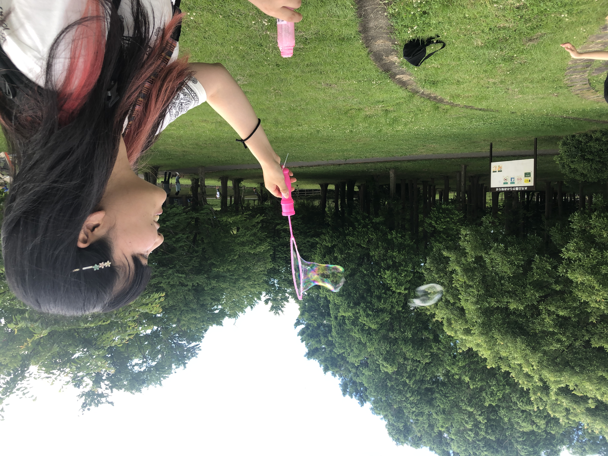
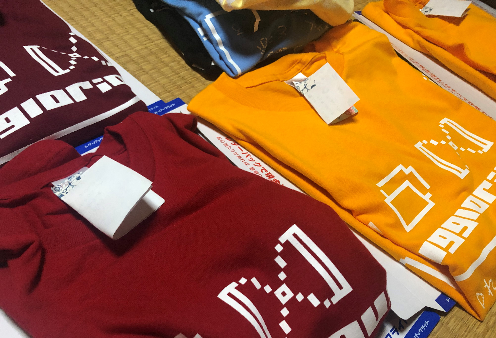
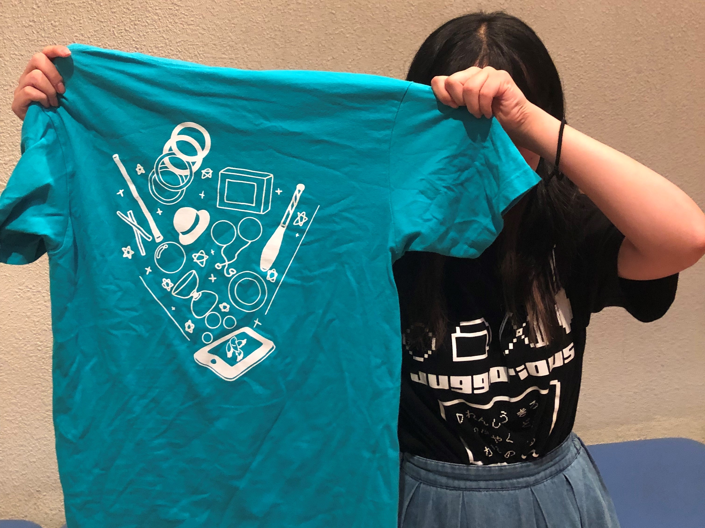
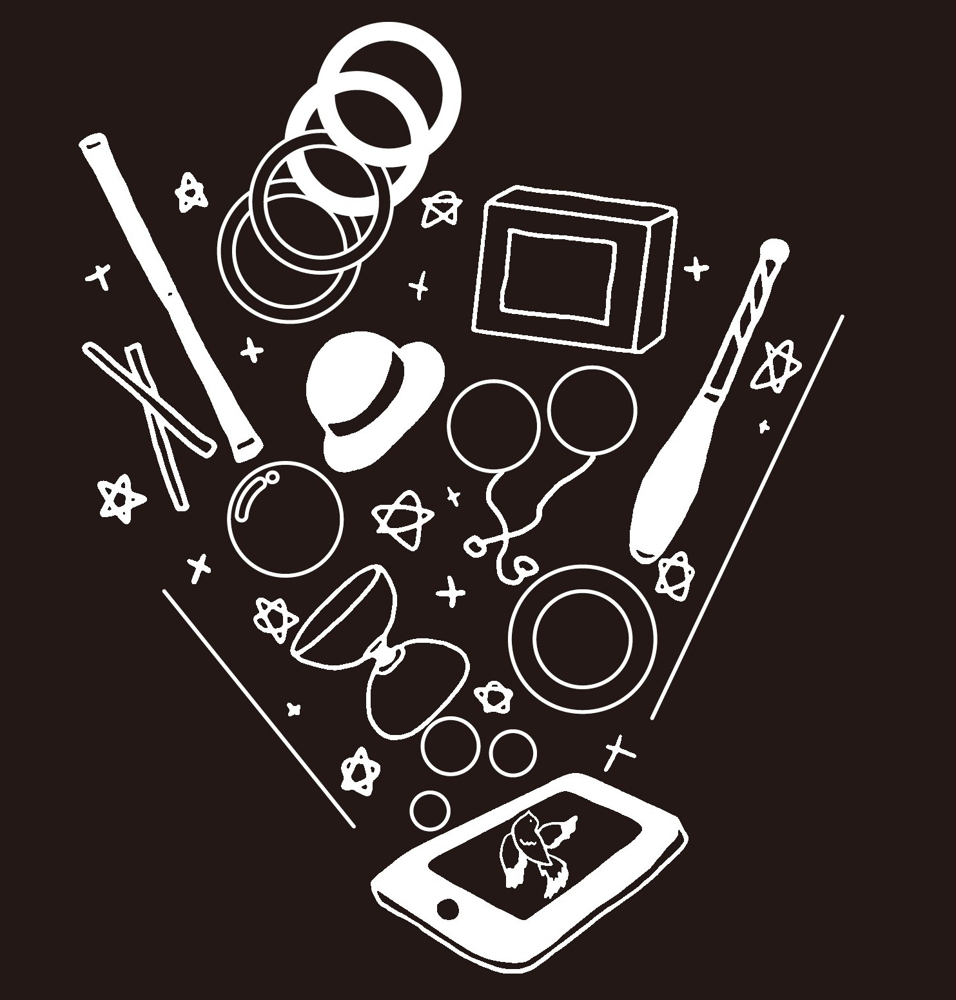
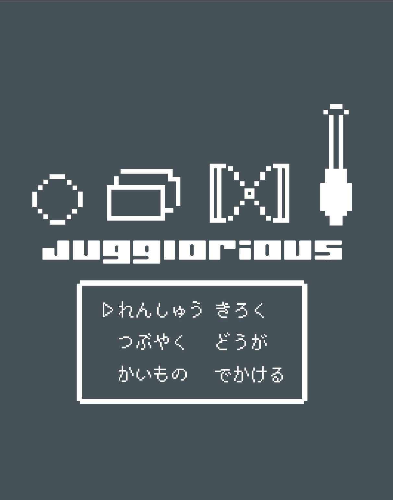

Profile

Mayuko Ikeya
明治大学大学院 情報コミュニケーション研究科
情報コミュニケーション学専攻 博士前期課程1年
好きなこと：美術館巡り、写真撮影
Juggling
コンタクトジャグリングと呼ばれる、水晶玉のような道具を用いたパフォーマンスをやっています。
"Reverie"
照明や演出にこだわりました。2019年12月3日開催「空転劇場vol.24」出演作品
"Last of teenage"
おとぎ話をイメージした作品です。10代最後の作品であることを意識した楽曲・衣装選択になっています。
Product


ジャグリングをテーマに、オリジナルのTシャツをデザインし販売しました。

スマホから様々なジャグリング道具が飛び出している様子を描き、インターネットで広まるジャグリングのコミュニティの様子を表現しました。80枚販売
スマホから様々なジャグリング道具が飛び出している様子を描き、インターネットで広まるジャグリングのコミュニティの様子を表現しました。80枚販売

前面はドットでジャグリング道具を表現し、その下にコマンド選択メニューを配置して、RPGで敵と遭遇した際のワンシーンらしくデザインしました。
背面はゲームのロード画面の「now loading」をもじったデザインです。79枚販売。
前面はドットでジャグリング道具を表現し、その下にコマンド選択メニューを配置して、RPGで敵と遭遇した際のワンシーンらしくデザインしました。
背面はゲームのロード画面の「now loading」をもじったデザインです。79枚販売。
Event
個人企画「Jugglorious部内発表会」
2019年9月14日開催。下北沢のHarf moon hallにて、有志のジャグリング発表会を運営しました。